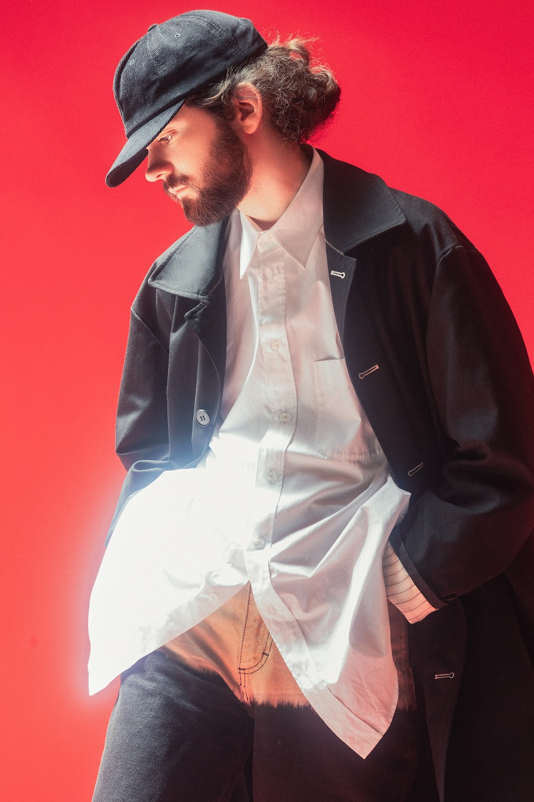

The Architects Blog
Who are we?
The Architects Blog is a project dedicated to reporting on news and celebrating the work of French electronic musician Hugo Leclerq, also known as Madeon. The blog was started by Kennesaw State University student David Rice, who has been a Madeon fan for 5+ years. We report on the latest updates regarding Madeon's creative work, provide a timeline of Madeon's projects, and offer a gallery of Madeon and his work.
Who is Madeon?
Hugo Leclerq, also known as Madeon, is an electropop/complextro musician hailing from Nantes, France. Hugo was born in 1994, and has been producing music and uploading it to the internet since he was just 12 years old. He first found widespread fame for his launchpad matchup “pop culture” which released in 2011 and has accumulated over 60 million views on YouTube. Since his debut into the wider electronic scene, Madeon has released two studio albums: Adventure (2015) and Good Faith (2019), as well as playing many live shows. You can learn more about Madeon's work in our gallery and timeline sections.
